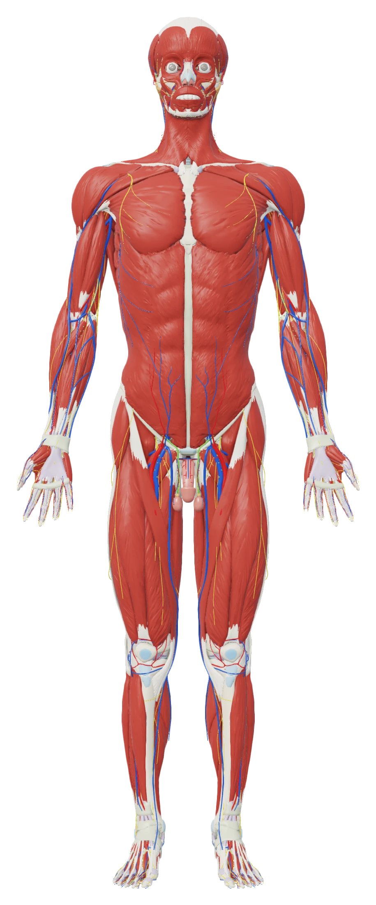
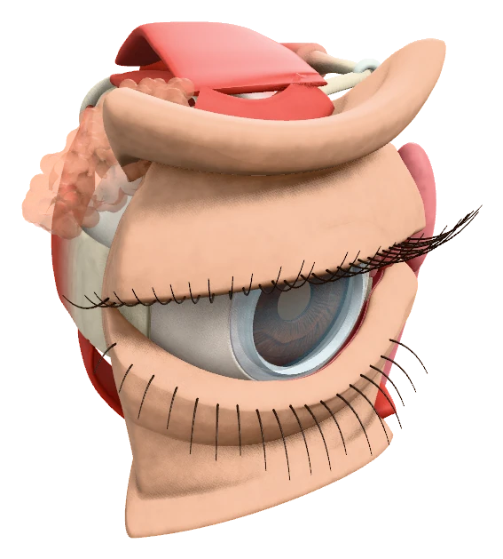
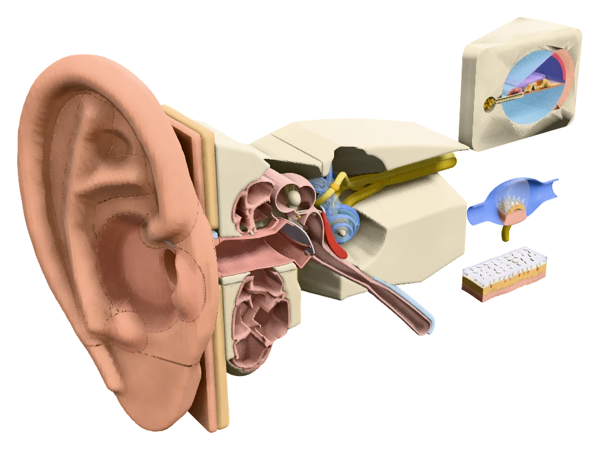
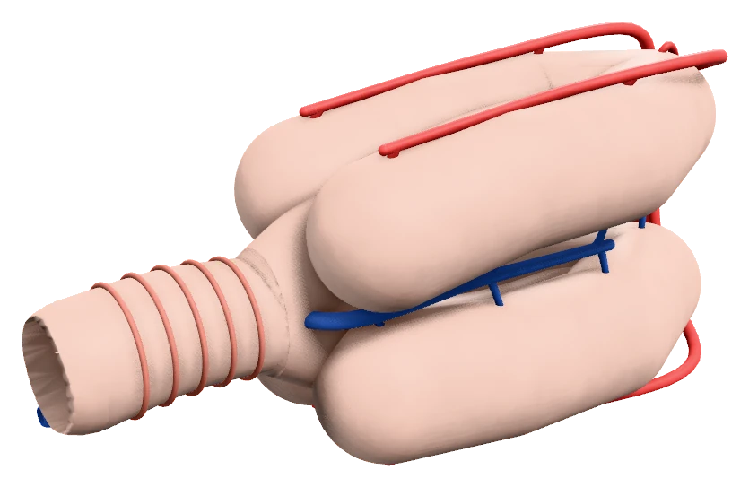
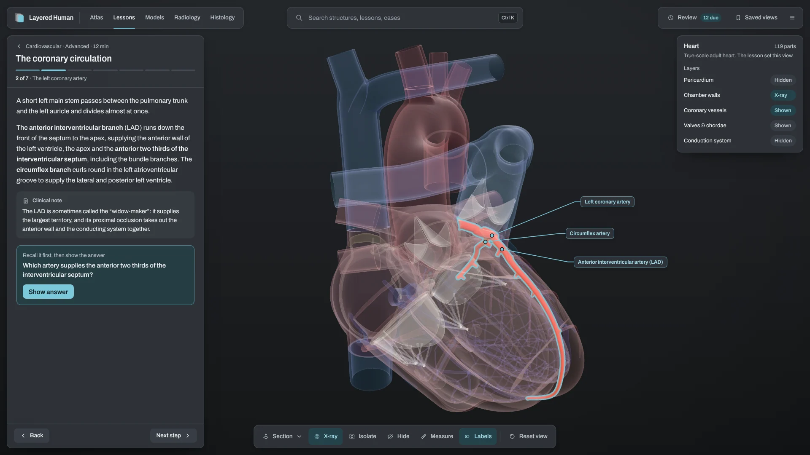
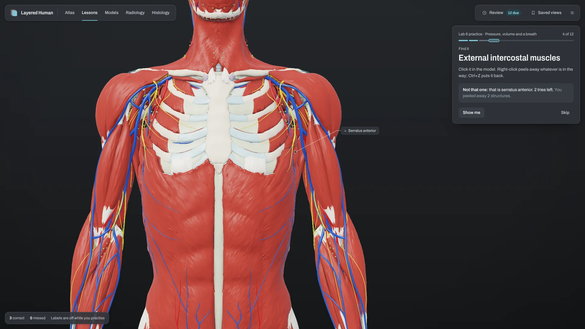
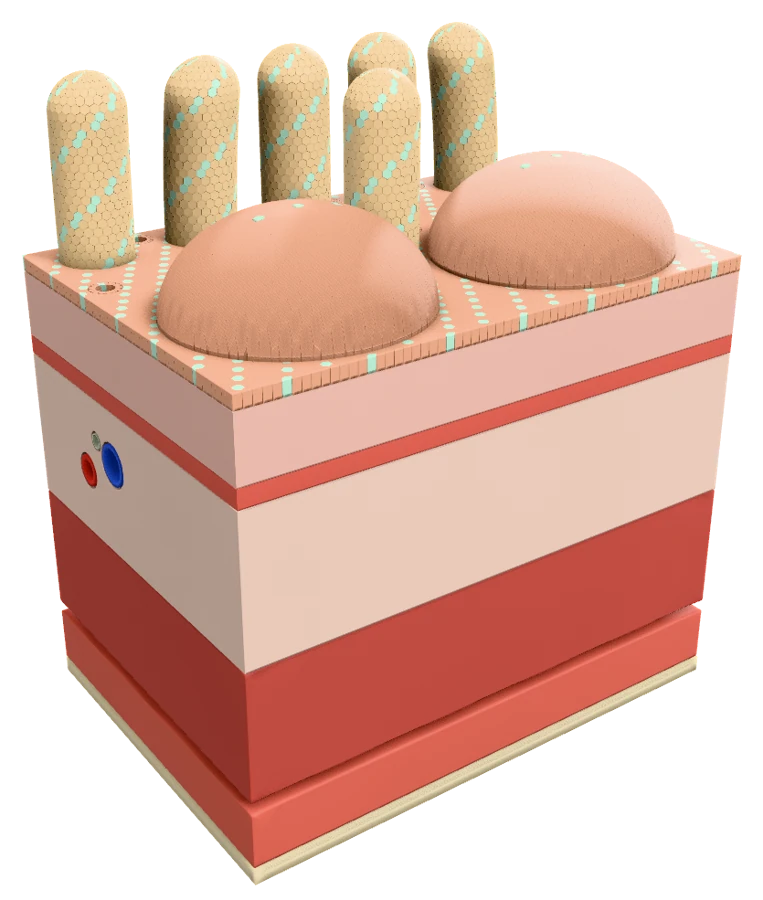

Peel the body back, layer by layer.
A free 3D anatomy atlas for your computer. Slide from skin to bone, cut a section that names itself, and study for your lab practical offline.
Depth that follows the body
Depth that follows the body
Drag the dissection slider and the body comes apart from the skin inwards. Depth is measured against how thick the body is at each point, so the hand and the thigh come away together. Want one layer on its own? Show only that slab.
Superficial fascia
8%The skin lifted away: the muscles show through.
Deep fascia
16%The wrappings under the skin.
Superficial muscles
26%Every muscle you can feel.
Deep muscles
40%The ribcage, the abdominal organs, the deep muscles of the limbs.
Skeleton & joints
55%Bone and ligament.
Body cavities
70%Heart, lungs and gut in their spaces.
Cut anywhere. The cut names itself.
Section the body sagittally, coronally or transversely. Every structure the plane passes through is named around the edge of the view. Click a name to select it.
Seen from below, as on a CT.
 1
2
3
4
5
6
7
8
9
10
1
2
3
4
5
6
7
8
9
10
- 1Right pectoralis major
- 2Right lung
- 3Liver
- 4Right atrium
- 5Right latissimus dorsi
- 6Sternum
- 7Right ventricle
- 8Left ventricle
- 9Left lung
- 10Thoracic vertebra
Anterior is up. The patient’s right is on your left.
Rendered by Layered Human from the Z-Anatomy and BodyParts3D atlas.
From the kidney to a podocyte, in one zoom.
41 interactive 3D models open in the same viewer, with the same controls and labels as the atlas. Step the kidney from the whole organ down to the podocytes. Hide the heart’s wall panels one at a time to look inside a true-scale heart in 119 parts.







Six of the 41 models, rendered by the app.
Browse the models on GitHubRead the film with the body beside it.
104 radiology cases put a real radiograph, CT, MR or ultrasound next to the live model, labelled on both sides. Click a number on the film and the model selects the same structure. In five chest cases, the model shows the disease itself.
The model is set up to match each film. It is not a scan of that patient.

_chest_radiograph_(X-ray).jpg){kind=link}

- 1Trachea
- 2Right clavicle
- 3Right humeral head
- 4Right atrium
- 5Left ventricle
- 6Right hemidiaphragm
- 7Right lung
- 8Left lung
Chest: massive pleural effusion.
The fluid is in the model.



 Anterior interventricular (LAD)
Circumflex artery
Anterior interventricular (LAD)
Circumflex artery
Every lesson sets up the view for you.
303 lessons in 1,614 steps. Each step switches systems, dissects to a depth, sections or opens a micrograph, so you’re always looking at the right thing. 1,525 of the steps ask you a question before you move on.
- The brachial plexus
- The conducting system of the heart
- The cubital fossa
- The nephron, segment by segment

 Biceps brachii
Biceps brachii
Find it. Name it. Read the film.
The lab course covers Labs 1–9 and two lab practicals in 109 mini lessons, with 1,824 graded practice items. Find a structure in 3D, name the one that’s highlighted, or put the steps in order. Then sit a practice exam of 20, 40 or 60 questions, or everything.
In Hunt, nothing is labelled. Peel structures away one at a time and find the one you’re asked for, in three tries.
What you miss comes back a day later, then after four days, then less often as you get it right.
The lab course, by topic
109 mini lessons, each a few short steps on one topic. Learn walks through the steps with the 3D view set up. Practice runs a short graded session beside the model.
Your course may be organised differently. Search finds any structure, lesson or case by name.
- Lab 1
- Nerves, reflexes and general senses
- Lab 2
- The eye and vision; the ear, hearing and balance
- Lab 3
- Blood; the heart
- Lab 4
- The ECG and heart function
- Lab 5
- Vessel walls and the arteries; veins, the portal system and fetal circulation
- Lab 6
- The respiratory system
- Lab 7
- Lung function and fitness
- Lab 8
- The digestive system; the urinary system
- Lab 9
- The male reproductive system; the female system and early development
- Practical 1
- Review of Labs 1–5, with a practice exam
- Practical 2
- Review of Labs 6–9, with a practice exam



Tissue, slide and model together.
101 tissues with 1,049 micrographs. The 3D models show the same layers in depth, and you can select, hide or cut through each one: the gut wall, the liver lobule, the osteon, the retina.
- 1Lumen
- 2Columnar epithelial cells
- 3Nucleus
- 4Connective tissue
Built to be looked up.
- 3,922 structures, from bones and ligaments to cranial nerves and skin regions
- 1,109 bony and organ landmarks
- Latin names and Terminologia Anatomica 2 IDs
- Origins and insertions mapped on the bone
- Innervation for 468 muscles, and the action of 466
- 423 clinical correlations, searchable by sign or syndrome
Free. Offline. Yours.
Layered Human runs entirely on your computer. Your progress, quiz history and notes stay in your own user folder, and updating or reinstalling never loses them. Updates download in the background. The code is open source under the MIT licence.
Read the code on GitHubBuilt on open anatomy.
The 3D atlas is adapted from Z-Anatomy and BodyParts3D, shared under CC BY-SA. Terms follow Terminologia Anatomica 2. Radiology and histology images come from Wikimedia Commons contributors, and each one shows its author and licence. Layered Human is a study aid, not a medical device.
Credits & licences
- Atlas
- Z-Anatomy, “The libre 3D atlas of anatomy”, CC BY-SA 4.0 (Gauthier Kervyn et al.)
- Models
- BodyParts3D, © The Database Center for Life Science (DBCLS), CC BY-SA 2.1 Japan
- Terms
- Terminologia Anatomica 2 (FIPAT). Descriptions: Wikipedia, CC BY-SA 3.0
- Images
- Wikimedia Commons contributors; each image shows its author, licence and source in the app. On this page: Mikael Häggström (CC0), Sara Nabih (CC BY-SA 4.0), Echinaceapallida (CC BY-SA 4.0)
- Code
- MIT, © 2026 Ethan Prince. Qt and PySide6 under LGPL-3.0
If you share the anatomy dataset or anything made from it, credit these sources and share it under the same licence.
Ready when you are.
About 3.4 GB. Free for Apple silicon Macs (macOS 13 or later) and Windows. The first time you open it, your computer may warn you because the app isn’t signed with a paid certificate. Here’s what to click.
Mac
Apple silicon (M1 or newer), macOS 13 or later. You need about 8 GB free while it installs.
Download for Mac- Open the disk image and double-click the installer.
- If macOS says it “cannot be opened”: System Settings → Privacy & Security → Open Anyway.
- It downloads about 3.4 GB, checks each part, copies the app into Applications and opens it. If it stops, run it again.
Windows
The small download fetches the full app in parts, about 3.4 GB, and installs it for you.
Download for Windows- Right-click the downloaded file and choose Run with PowerShell. Double-clicking it opens Notepad instead.
- It downloads the installer parts, joins them and starts the installer.
- If “Windows protected your PC” appears: More info, then Run anyway.
If that doesn’t work, open PowerShell in your Downloads folder and run:
Set-ExecutionPolicy -Scope Process Bypass -Force; $ProgressPreference='SilentlyContinue'; .\Download-Windows-Installer.ps1
Why the warning?
The app isn’t signed with a paid developer certificate, so your computer can’t check who made it. Only the installer needs the extra click. The code is public on GitHub.
Using Linux, or want to run it from source? Instructions on GitHub.
Questions before you download.
Is it really free?
Yes. Download it from GitHub releases. The code is MIT-licensed.
Do I need the internet?
Only to download it and to get updates. After that it runs entirely on your computer.
Which computers does it run on?
Windows, and Macs with Apple silicon (M1 or newer) on macOS 13 or later. On Linux you can run it from source.
Why is it so big?
About 3.4 GB: a whole-body atlas with 3,922 structures, 41 models and the radiology and histology images, all stored on your machine so it works offline.
Why does my computer warn me?
The app isn’t signed with a paid developer certificate. What to click.
Will it match my course?
It has a lab course for Labs 1–9 and two practicals, plus lessons by system, region and level. See the topics.
Can I use it to diagnose?
No. It’s a study aid, not a medical device. Radiology models are set up to match each film, not fitted to it.
Something went wrong.
The app writes an error log to the logs folder in your user folder. Report it on GitHub.